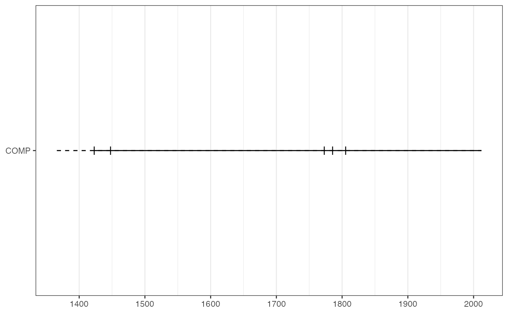

Composite fire events in fhx object
composite( x, filter_prop = 0.25, filter_min_rec = 2, filter_min_events = 1, injury_event = FALSE, comp_name = "COMP" )
| x | An |
|---|---|
| filter_prop | The minimum proportion of fire events in recording series needed for fire event to be considered for composite. Default is 0.25. |
| filter_min_rec | The minimum number of recording series needed for a fire event to be considered for the composite. Default is 2 recording series. |
| filter_min_events | The minimum number of fire scars needed for a fire
event to be considered for the composite. Default is 1. Fire injuries are
included in this count if |
| injury_event | Boolean indicating whether injuries should be considered
events. Default is |
| comp_name | Character vector of the series name for the returned |
An fhx object representing the composited series. The object will
be empty if there are nocomposite-worthy events.
intervals() fire interval analysis from an fhx composite.
sea() superposed epoch analysis.
series_stats() basic summary stats for an fhx object.
get_event_years() gets years for various events in an fhx object.
count_event_position() count the number of different events in an fhx
object.
yearly_recording() count the number of "recording" events in each year
of an fhx object.
fhx() constructs an fhx object.
as_fhx() casts data frame-like object into an fhx object.
# Use with composite to get composite years: comp <- composite(pgm, comp_name = "pgm") event_yrs <- get_event_years(comp)[["pgm"]] print(event_yrs)#> [1] 1636 1648 1664 1674 1685 1714 1724 1737 1746 1748 1752 1782 1789 1795 1798 #> [16] 1806 1818 1824 1842 1863 1871